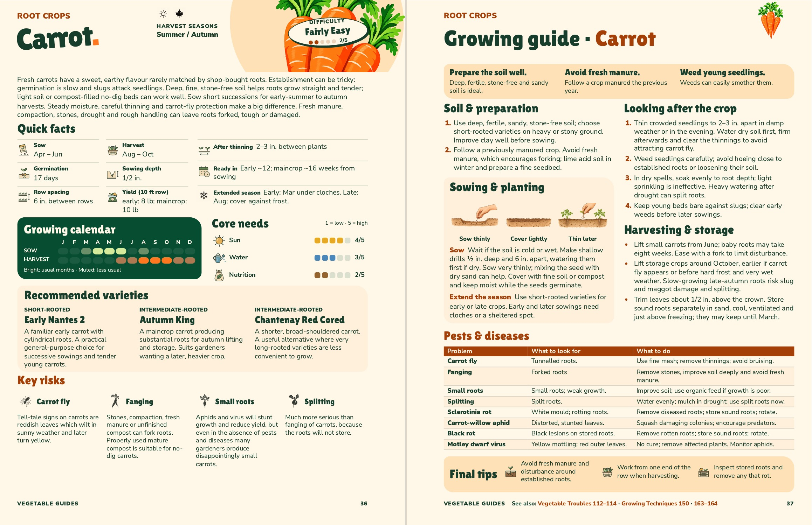

Carrot fits on two facing pages
The calendar reads SOW and the soil lines in the three planting illustrations now match. The practical title has more room above the reminder banner. The restored footer links open the relevant pages of the book.

See also: Vegetable Troubles 112–114 · Growing Techniques 150 · 163–164